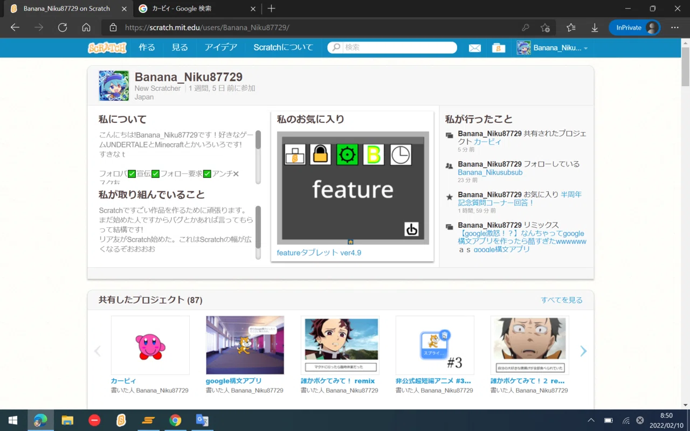

HTML版のBanana_Niku87729サイトへようこそ！！
ヒヨってたけど書いてみた
仕組みわかると意外と楽しいね

分かる人にはわかるこの画像。主のアイコンはこれです。
まだまだ未熟だし、やり方もわからないし、なんせめんどくさいのでレスポンシブ対応はできません、ゆるしてくださいほんとに


上のロゴはアーイーという神様がわざわざDiscordのDMで提供してくれたかみロゴです！！！！！！！
アドレナリンやばい
下はアーイーさんのTwitterです！！みんなフォローしようね((圧
Banana_Niku87729ってどういうイキモノ？
Scratchから活動を開始したイキモノ

おそらく最古のスクショ、
このときはまだ楽しく活動してました。このときはね
(というかこんときは学タブ使って遊んでたなぁ 懐かしい)
なぜこんなにもScratchで活動が減ってしまったのか
理由は単純です、ネタが無い！！！
そもそもこのときからScratchじゃなくて他のSNSで楽しんでたからそれもあるかも知れない
これからのScratchの方針はどうするのか
続けていくつもりです、Scratchはネットを楽しいと思える場所と思わせてくれたので感謝しています。
もちろんScratchの活動が増えるわけではありませんが、これからも続けていくつもりでいます。

HTML版のBanana_Niku87729サイトへようこそ！！
ヒヨってたけど書いてみた
仕組みわかると意外と楽しいね
分かる人にはわかるこの画像。主のアイコンはこれです。
まだまだ未熟です！
上のロゴはアーイーという神様がわざわざDiscordのDMで提供してくれたかみロゴです！！！！！！！
アドレナリンやばい
下はアーイーさんのTwitterです！！みんなフォローしようね((圧
Banana_Niku87729ってどういうイキモノ？
Scratchから活動を開始したイキモノ
おそらく最古のスクショ
なぜこんなにもScratchで活動が減ってしまったのか
理由は単純です、ネタが無い！！！
そもそも他のSNSで楽しんでたからそれもあるかも知れない
これからのScratchの方針はどうするのか
続けていくつもりです、Scratchはネットを楽しいと思える場所と思わせてくれたので感謝しています。
もちろんScratchの活動が増えるわけではありませんが、これからも続けていくつもりでいます。